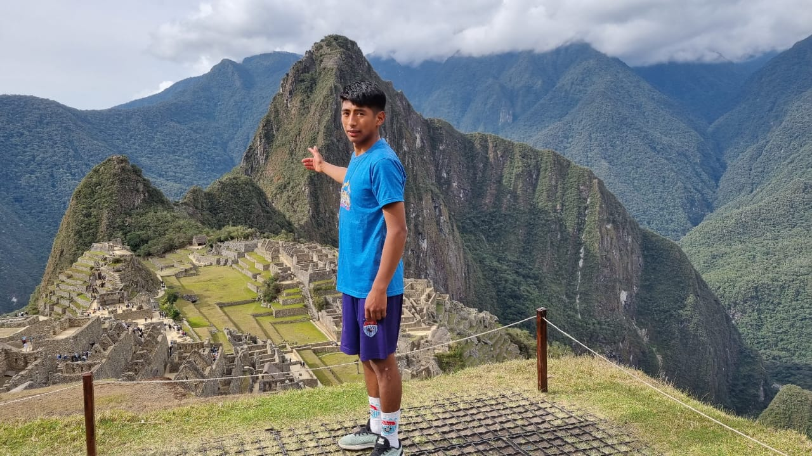
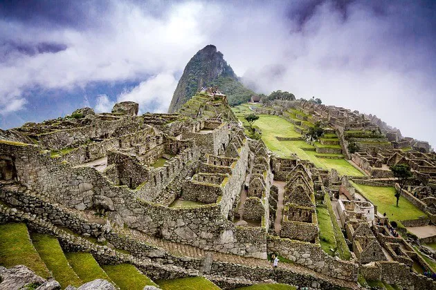
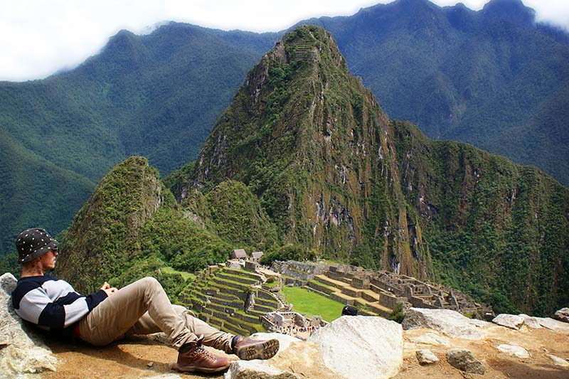

✨ La Ciudad Inca Perdida
Machu Picchu es una de las siete maravillas del mundo moderno y el principal atractivo turístico del Perú. Construida en el siglo XV durante el apogeo del Imperio Inca, se encuentra ubicada a más de 2,400 metros sobre el nivel del mar en la región del Cusco. Su arquitectura combina perfectamente con la naturaleza, rodeada de montañas y vegetación.
🏛 Arquitectura y Misterios
La ciudadela está formada por templos, terrazas agrícolas, plazas y recintos que muestran la increíble habilidad de los incas en ingeniería y construcción. El famoso Templo del Sol y la Piedra Intihuatana reflejan el conocimiento astronómico y espiritual de esta civilización.
🌿 Patrimonio Mundial
En 1983, Machu Picchu fue declarado Patrimonio Cultural y Natural de la Humanidad por la UNESCO. Hoy en día es un destino que atrae a millones de visitantes cada año, quienes llegan a través del Camino Inca o en tren desde Cusco.
